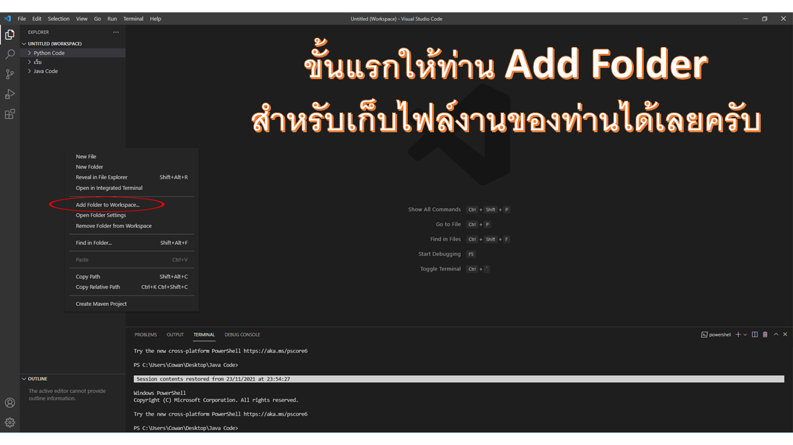
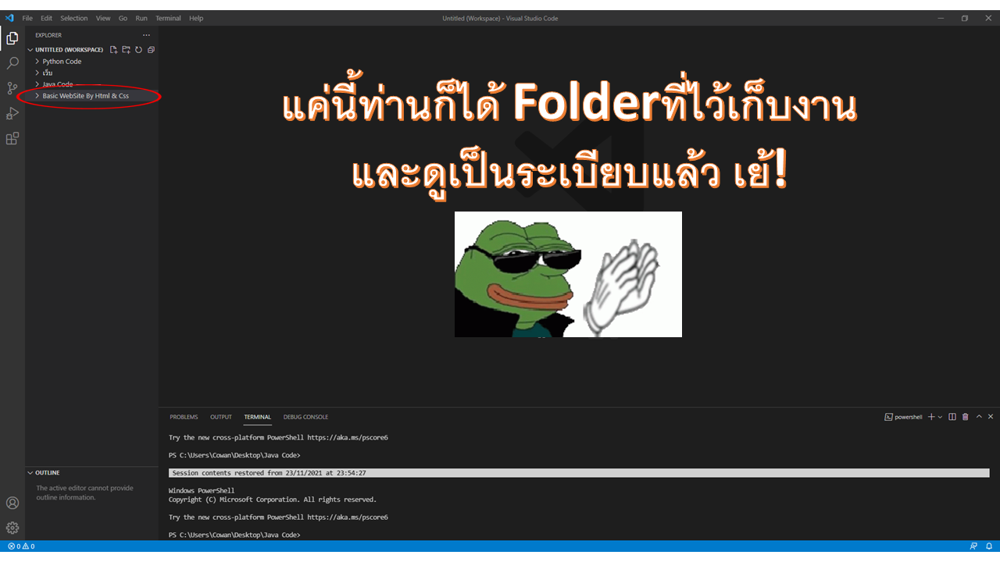
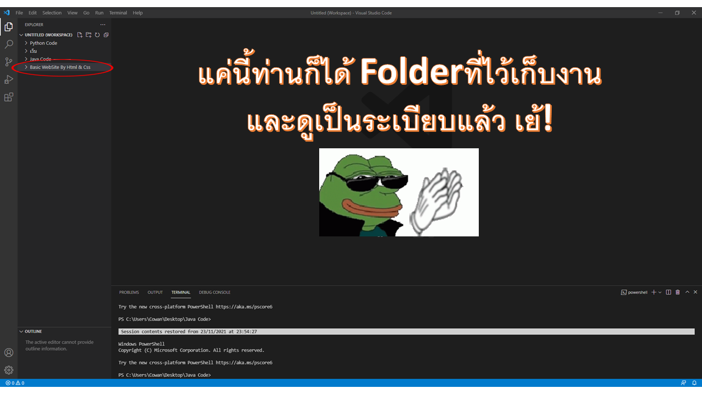
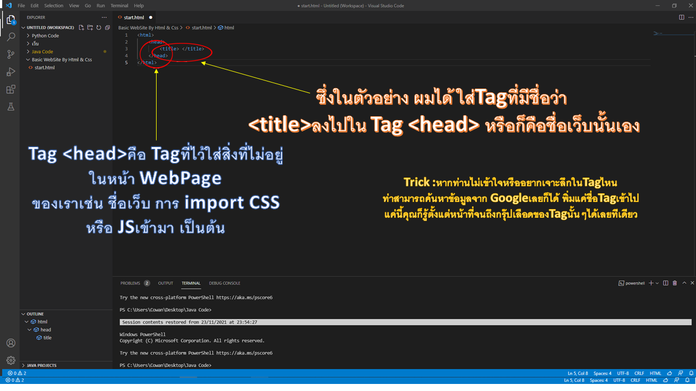
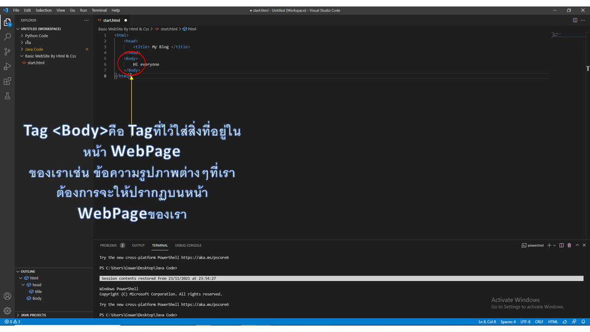
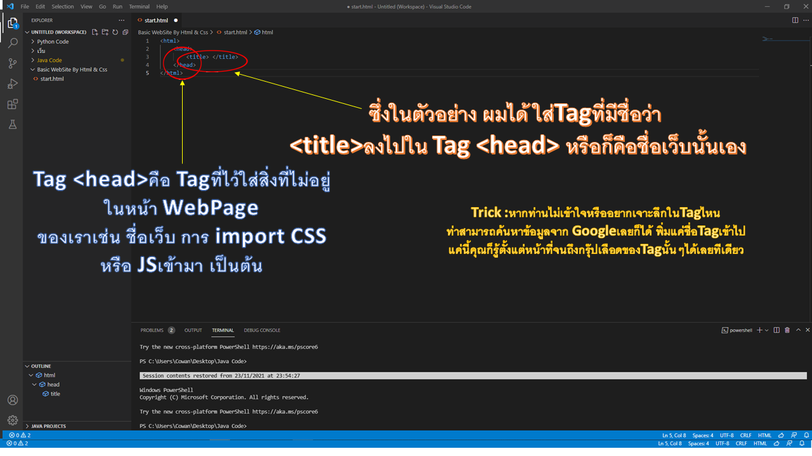
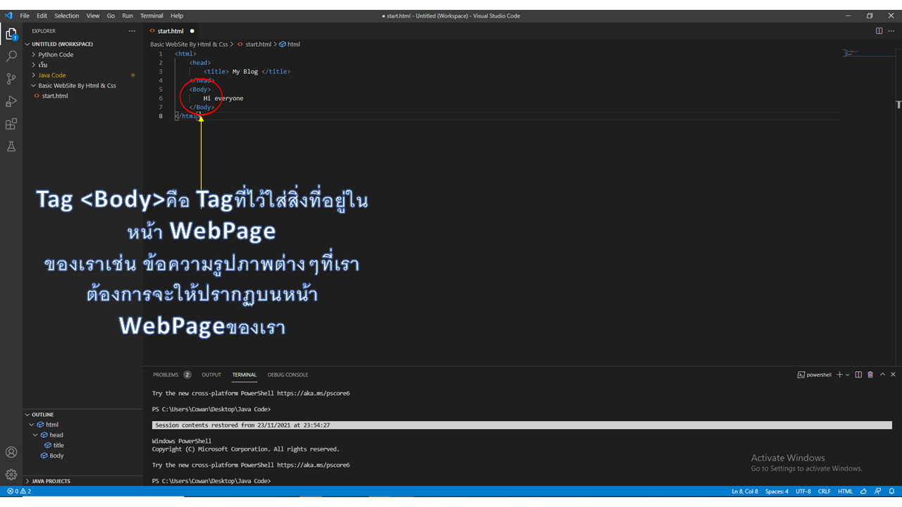

EP.1 Html Strat , Text , Image
1.เรามาเริ่มสร้างโฟลเดอร์ เพื่อที่จะเก็บตัวไฟล์งานของเราให้ดูเป็นระเบียบเรียบร้อยกันดีกว่า
 

2.ขั้นตอนต่อมาเรามาเริ่มสร้างไฟล์งานของเรากันได้เลย


3.เอาล่ะเรามาเริ่มเข้าเนื้อหาเละมาเรียนรู้ Tag เริ่มต้นกันดีกว่า
 



*เรามาพักเบรคเเล้วมาดูว่าวิธีการsaveงานเเละเปิดดู WebPageของเรานั้นทําอย่างไร

มาต่อกันเลย Tag ส่วนใหญ่ที่ผมจะสอนใน Partนี้ มักจะเป็น Tag ที่ไว้ใช้ทํามาหากินในขั้นพื้นฐานเกือบทั้งหมด เราจะมาสอนTagที่เป็นเฉพาะทางกันบ้างในPartต่อๆไป คอยติดตามทางหน้า WebSiteไว้ได้เลย

4.การตกเเต่งข้อความ ด้วย CSS ในขั้นเบื้องต้น


5.การ Import รูปเข้ามาใน WebPageของเรา


*Tips:เราสามารถใช้คําสั่ง Style เพื่อที่จะตกเเต่งรูปด้วย Css เหมือนที่เราทํากับ Textได้อีกด้วย

เอาล่ะพอมาถึงตรงนี้แล้วทุกคนอาจจะคิดว่ามันง่ายน่ะเนี่ยก็แค่ใส่ข้อความรูป ก็ทำเว็บได้แล้ว หากคุณคิดแบบนี้ จงคิดต่อไปครับเพราะมันก็ไม่ได้ยากอะไรหรอกครับ 😉 แต่หากจะทำให้เว็บมันดูสวยและจัดcodeให้เป็นระเบียบเนี่ยอาจจะต้องใช้เวลาและประสบการณ์นิดนึง ดังนั้นผมอยากให้ทุกท่านที่เรียนหรือศึกษากันมาจนถึงตอนนี้ ได้พักและกลับไปฝึกใช้ Tag และทำความเข้าใจแต่ล่ะ Tagให้มากยิ่งขึ้นน่ะครับ จริงๆมันมีอีกหลาย Tagเลยแต่ ไว้เรามาเรียนกันต่อใน Partต่อไปดีกว่า ซึ่งอย่างที่บอกผมจะพยายามรวบรัดตัดตอนในบางอย่างแต่หากท่านตั้งใจและทดลองทำไปเรื่อยๆตามที่ผมได้สอนไว้ รับรองเลยว่าท่านจะใช้ Tagต่างๆได้คล่องแน่นอน อย่าลืม!ไปหาศึกษาเพิ่มเติมกันด้วยน่ะครับ ใน Partต่อไปเราจะมาศึกษากันในเรื่อง Html Linkและเนื้อหาเพิ่มเติมอีกประมาณ 2-3หัวข้อ หากท่านใดที่พร้อมแล้วก็สามารถไปศึกษาหรืออ่านบทความใน Partต่อไปกันได้เลย
Next Step!